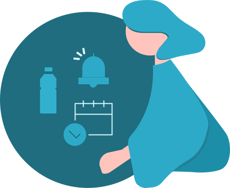
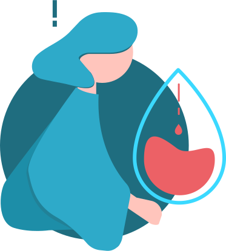
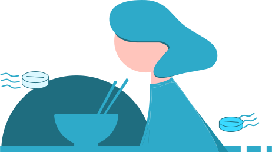
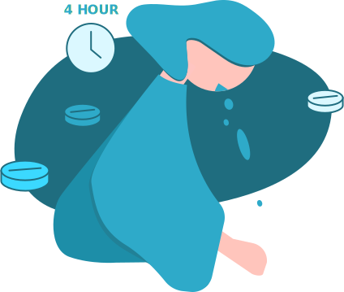

누구에게나
처음은 어려우니까
처음이니까 순하게

처음이라면
피임약을 처음 복용하신다면 꼭 읽어보세요!1,2
-

01
피임효과를 높이려면 매일같은
시간에 물과 함께 복용하세요식사와는 무관하게 드실 수 있어요.
-

02
부정출혈 겁내지 마세요.부정출혈은 피임약의 흔한 부작용입니다.
일시적인 부정출혈은 복용 후 3주기(약 3개월)가 지나면
몸이 적응하면서 자연스럽게 없어지게 된답니다. (복용 2-3개월이 지나도 불규칙 출혈이 지속되면 전문가와 상의해주세요) -

03
메스꺼움이 느껴질 때는 식사 후
또는 잠들기 전 복용하시면
훨씬 편안해져요. -

04
복용 4시간 이내 구토 시
1정을 다시 드세요 -
05
머리가 아프면 아스피린, 이부프로펜,
아세트아미노펜을 드실 수 있어요
-
01
생리 시작일부터
정해진 시간에 -
02
노란색약부터
24일간 모두 복용 -
03
흰색약을 4일간 복용
깜빡하지 않기!! -
04
휴약기 셀 필요 없이
새 디어미순으로 복용 시작
생리 시작 2~5일째 복용도 가능하나 첫 7일간은 보조 피임을 함께 하셔야 해요
1일 1정씩 28일간 표시된 순서에 따라 복용합니다.
(24일 동안 노란색 정제(활성약), 이후 4일 동안은 흰색 정제(위약))
복용시간은 가능하면 매일 같은 시간에 복용하는 것이 바람직합니다.
호일 뒷면에 표기된 요일은 하나의 예시입니다.
노란색 24정을 순서대로 모두 복용하신 후 남은 4일 동안 흰색 4정을 복용하시면 됩니다.
(노란색 알약이 남아있을 때 흰색 알약을 복용하시면 안돼요)
잠깐! 피임약을 복용하기 전에 체크해보세요
디어미순 복용 중 주의사항 체크리스트
아래 하나라도 해당 하시는 분은 피임약을 드시면 안돼요1
- 만 35세 이상 흡연자다.
- 혈전, 뇌졸중, 심혈관계 질환이 있거나 가족력이 있다.
- 지금 유방암이 있거나 5년 이내에 있었다.
- 160/100mmHg 이상의 중증 고혈압이 있다.
- 20년 이상 또는 합병증을 동반한 당뇨가 있다.
- 간경화, 간염, 간암이 있다.
- 전조증상이 있는 편두통이 있다.
- 임신 가능성이 있다.
- 출산 후 3주 이내이다.
- 출산 후 3주 이내이다.
- 일주일 이상 움직일 수 없는 수술이 예정되어 있다.
-
다음 약물 중 한 가지 이상 복욕 중이다.(피임효과 감소에 유의)
- 간질약
- 결핵약
- 항생제
1. 식약처.피임약 복약지도(약사용).2016, 2. 디어미순 허가정보